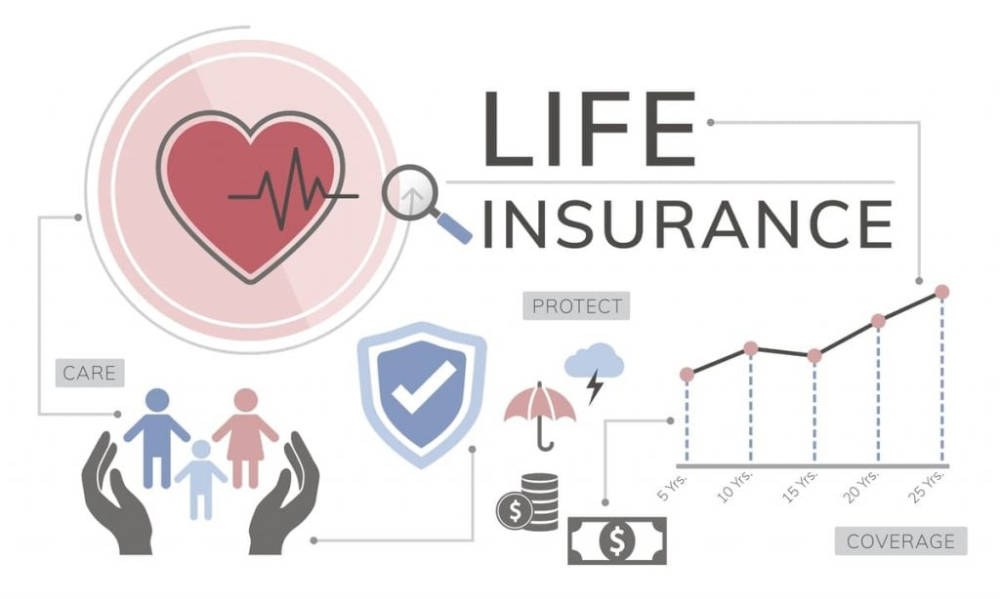

Pengantar
Dalam kehidupan yang penuh dengan ketidakpastian, memiliki perlindungan finansial menjadi semakin penting. Salah satu cara untuk melindungi diri dan keluarga dari risiko finansial adalah dengan memiliki asuransi. Asuransi kesehatan, asuransi kritis, dan asuransi jiwa adalah tiga jenis asuransi yang berperan kunci dalam memberikan perlindungan finansial yang komprehensif. Artikel ini akan menjelaskan secara mendalam mengenai ketiga jenis asuransi tersebut dan mengapa penting untuk memiliki asuransi-asuransi tersebut.
1. Asuransi Kesehatan
Asuransi kesehatan adalah bentuk perlindungan finansial yang mengganti atau membantu membayar biaya perawatan kesehatan individu atau keluarga. Dengan premi yang dibayarkan secara teratur, pemegang polis akan mendapatkan manfaat berupa biaya perawatan kesehatan yang dapat mencakup kunjungan dokter, rawat inap di rumah sakit, pemeriksaan laboratorium, obat-obatan, dan tindakan medis lainnya.
Pentingnya memiliki asuransi kesehatan:
- Mengurangi beban biaya kesehatan: Biaya perawatan kesehatan bisa sangat mahal, terutama jika memerlukan rawat inap atau perawatan jangka panjang. Asuransi kesehatan membantu mengurangi beban finansial yang mungkin timbul akibat biaya medis yang tinggi.
- Akses ke perawatan yang tepat waktu: Dengan asuransi kesehatan, seseorang dapat dengan mudah mengakses perawatan medis tanpa harus menunggu atau memikirkan kemampuan finansialnya. Ini memastikan bahwa kondisi kesehatan dapat ditangani sejak awal sebelum menjadi lebih serius.
- Pencegahan dan perawatan berkelanjutan: Asuransi kesehatan seringkali menyediakan program pencegahan dan perawatan berkelanjutan, seperti vaksinasi, pemeriksaan rutin, dan manajemen penyakit kronis. Hal ini membantu mencegah terjadinya kondisi yang lebih serius dan meningkatkan kualitas hidup pemegang polis.
2. Asuransi Kritis
Asuransi kritis (critical illness insurance) adalah jenis asuransi yang memberikan pembayaran tunai jika pemegang polis didiagnosis menderita penyakit kritis yang telah ditetapkan dalam polis. Penyakit kritis yang seringkali dijamin oleh asuransi ini meliputi kanker, serangan jantung, stroke, gagal ginjal, dan kondisi serius lainnya.
Pentingnya memiliki asuransi kritis:
- Dukungan finansial saat menghadapi penyakit kritis: Penyakit kritis seringkali memerlukan biaya tambahan yang signifikan untuk pengobatan, perawatan, dan pemulihan. Asuransi kritis memberikan pembayaran tunai yang dapat membantu dalam mengatasi beban finansial ini, sehingga fokus dapat tetap pada pemulihan dan perawatan.
- Penyediaan dana untuk pengobatan eksperimental atau alternatif: Beberapa kondisi kritis mungkin memerlukan perawatan eksperimental atau alternatif yang tidak sepenuhnya ditanggung oleh asuransi kesehatan. Asuransi kritis dapat memberikan dana tambahan yang dapat digunakan untuk perawatan semacam itu.
- Pemberian manfaat meskipun tidak mengalami kematian: Asuransi kritis memberikan manfaat berupa pembayaran tunai meskipun pemegang polis tidak mengalami kematian. Hal ini berarti, jika didiagnosis dengan penyakit kritis, pemegang polis dapat memanfaatkan manfaat tersebut untuk memenuhi kebutuhan finansial sehari-hari.
3. Asuransi Jiwa
Asuransi jiwa adalah bentuk perlindungan finansial yang memberikan manfaat berupa pembayaran tunai atau sejumlah uang jika pemegang polis meninggal dunia. Manfaat asuransi jiwa tersebut diberikan kepada ahli waris yang ditentukan dalam polis.
Pentingnya memiliki asuransi jiwa:
- Menggantikan pendapatan: Asuransi jiwa membantu menggantikan pendapatan yang hilang akibat meninggalnya seorang penopang keluarga. Hal ini memastikan bahwa keluarga yang ditinggalkan tetap memiliki sumber pendapatan untuk memenuhi kebutuhan mereka.
- Melunasi hutang dan biaya lainnya: Asuransi jiwa dapat digunakan untuk melunasi hutang seperti kredit rumah, kredit mobil, atau biaya pendidikan anak. Ini mencegah beban hutang jatuh kepada keluarga yang ditinggalkan.
- Warisan untuk masa depan: Manfaat asuransi jiwa juga dapat dianggap sebagai warisan untuk keluarga atau penerima manfaat. Hal ini bisa membantu mewujudkan rencana masa depan atau memberikan perlindungan bagi generasi mendatang.
Kesimpulan
Asuransi kesehatan, asuransi kritis, dan asuransi jiwa adalah tiga bentuk perlindungan finansial yang penting dan saling melengkapi.
Dalam menghadapi ketidakpastian dan risiko finansial dalam hidup, memiliki ketiga jenis asuransi tersebut dapat memberikan kedamaian pikiran dan kepastian bahwa diri sendiri dan keluarga terlindungi dengan baik.
Dengan membayar premi secara teratur, kita dapat menghindari beban finansial yang berlebihan ketika menghadapi situasi krisis kesehatan atau kematian.
Oleh karena itu, bijaksanalah untuk mempertimbangkan dan mengakuisisi asuransi kesehatan, asuransi kritis, dan asuransi jiwa sesuai dengan kebutuhan dan kondisi finansial masing-masing individu.